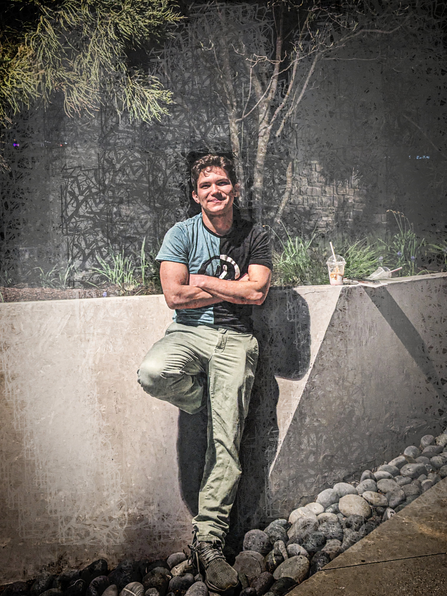

About Chris: Technical Artist & Developer
Combining systems engineering foundations with creative 3D design.
My Journey
My journey in technology began in my hometown of Cucuta, Colombia, where I studied Systems Engineering at the Universidad de Santander (UDES) from 2016 to 2020. This formal education provided me with a solid foundation in logic and software structures.
Driven by a passion for visual creation, I transitioned into the world of 3D Modeling. I mastered Autodesk Maya through professional courses on Udemy and countless hours of self-taught practice. This blend of engineering and art led me to become a Technical Artist, a role where I can bridge the gap between complex code and visual aesthetics.
Experience & Self-Learning
Over the last 10 years, I have evolved as both a student and a self-taught creator. My experience includes:
- Web Development: Building dynamic, responsive sites using HTML, CSS, and JavaScript.
- 3D Design: Specialized in organic modeling and hard-surface assets.
- Software Logic: Developing backend tools and console applications in C#.
Currently living in New York, I continue to expand my skills, working on projects that challenge my technical limits and creative vision.
